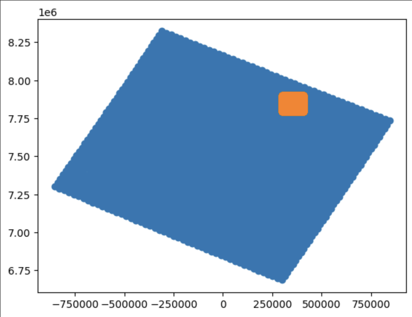

Colocate Sentinel-2 and Sentinel-3 Imagery#
This week, we’ll proceed with the task initiated in Week 5: aligning and colocating Sentinel-2 and Sentinel-3 imagery. Our goal is to refine the colocated dataset, preparing it for further analysis.
The figure below shows the Sentinel-3 (blue) and Sentinel-2 (orange) location corresponding to the 2019-03-01 images analysed during previous weeks. 
Step 1: Load S3 and S2 images sample data#
#The subset of data satisfy condition = (x_s3 > 360000) & (x_s3 < 380000) & (y_s3 > 7800000) & (y_s3 < 7820000)
#See week5 notebooks for more information
import numpy as np
path = '/content/drive/MyDrive/Teaching_Michel/GEOL0069/StudentFolder/Week_4/' # You need to specify the path
# x_s3=np.load(path+'x_s3.npy')
# y_s3=np.load(path+'y_s3.npy')
# reshaped_array=np.load(path+'reshaped_array.npy')
x_s3_condition=np.load(path+'x_s3_condition.npy')
y_s3_condition=np.load(path+'y_s3_condition.npy')
reshaped_array_condition=np.load(path+'reshaped_array_condition.npy')
#Here I apply an artificial offset to see if I can retrieve it later with the autocorrelation code
# Roll x_s3 array by 10 grids in the x-direction
# reshaped_array_rolled = np.roll(reshaped_array, 3, axis=0)
# Roll x_s3_rolled array by -5 grids in the y-direction
# reshaped_array_rolled = np.roll(reshaped_array_rolled, -5, axis=1)
x_s2_condition=np.load(path+'x_s2_condition.npy')
y_s2_condition=np.load(path+'y_s2_condition.npy')
band_stack_condition=np.load(path+'band_stack_condition.npy')
# x_s2=np.load(path+'x_s2.npy')
# y_s2=np.load(path+'y_s2.npy')
# band_stack=np.load(path+'band_stack.npy')
## Step 2: Label S2 pixels (See week 4 on unsupervised classification) For the code below, we use K-Means clustering to get the labels of Sentinel-2 image and we will use them to generate part of the training data.
import numpy as np
from sklearn.cluster import KMeans
# Reshape the data into a column vector if needed
temp = band_stack_condition.reshape(-1, 1)
# Initialize KMeans model with 2 clusters
kmeans = KMeans(n_clusters=2)
# Fit the model to your data
kmeans.fit(temp)
# Get the labels assigned by KMeans
labels = kmeans.labels_
print(labels)
Step 3: Find collocated pixels using KDTree#
from scipy.spatial import cKDTree
import numpy as np
import matplotlib.pyplot as plt
from scipy.interpolate import griddata
# Scatter input values
# condition = (x_s3 > 360000) & (x_s3 < 380000) & (y_s3 > 7800000) & (y_s3 < 7820000)
# x_s3_condition, y_s3_condition = x_s3[condition], y_s3[condition]
# Define a KD-tree using x_s2_condition and y_s2_condition
tree = cKDTree(list(zip(x_s2_condition, y_s2_condition)))
# Query the tree to find all points within x_s3_condition and y_s3_condition grids
ss3=1
indices_within_grid = tree.query_ball_point(list(zip(x_s3_condition[::ss3], y_s3_condition[::ss3])), r=300.0)
# cKDTree.query(self, x, k=1, eps=0, p=2, distance_upper_bound=np.inf, workers=1)#
#And here they are plotted
index_s3=1200
plt.scatter(x_s2_condition[indices_within_grid[index_s3]],y_s2_condition[indices_within_grid[index_s3]],c=band_stack_condition[indices_within_grid[index_s3]])#,vmin=0.,vmax=1)
plt.colorbar()
#Here we plot the labels
index_s3=1200
plt.scatter(x_s2_condition[indices_within_grid[index_s3]],y_s2_condition[indices_within_grid[index_s3]],c=labels[indices_within_grid[index_s3]], cmap='Blues_r')#,vmin=0.,vmax=1)
plt.colorbar()
zs2avg=[]
for i in range(len(x_s3_condition)):
zs2avg.append(np.mean(band_stack_condition[indices_within_grid[i]]))
# zs2avg.append(np.mean(band_stack_condition[indices_within_grid[i]<3996001]))
SICavg=[]
for i in range(len(x_s3_condition)):
SICavg.append(np.mean(labels[indices_within_grid[i]]))
# zs2avg.append(np.mean(band_stack_condition[indices_within_grid[i]<3996001]))
Now, having processed the data, you’re ready to save it for utilisation in subsequent notebooks.